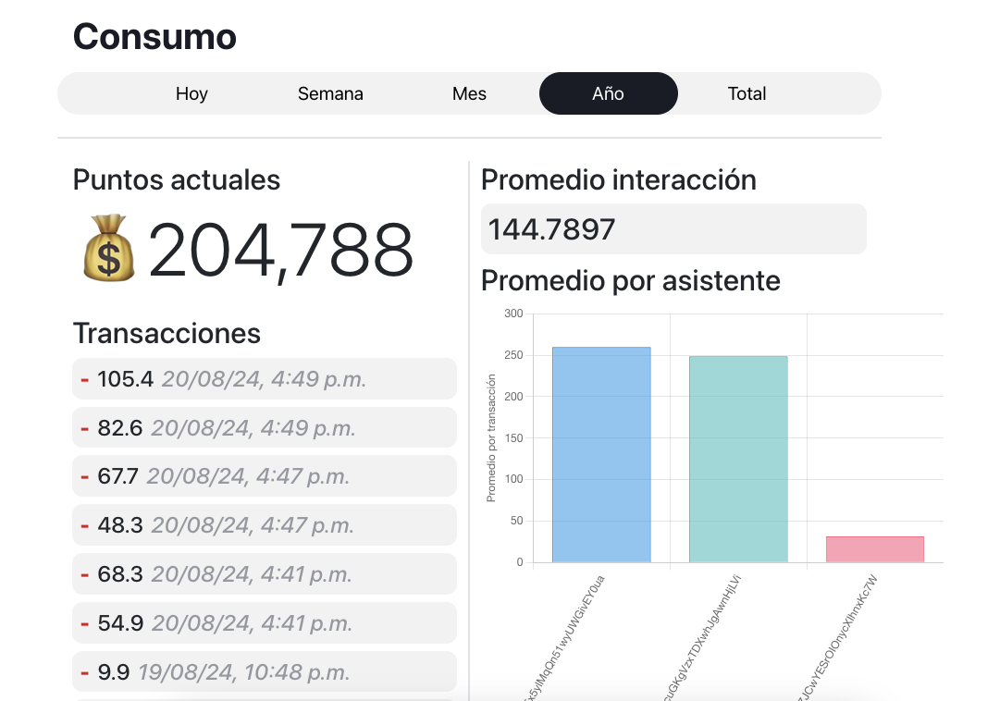
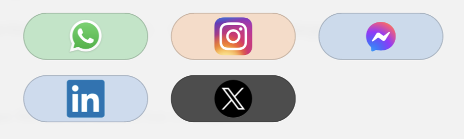
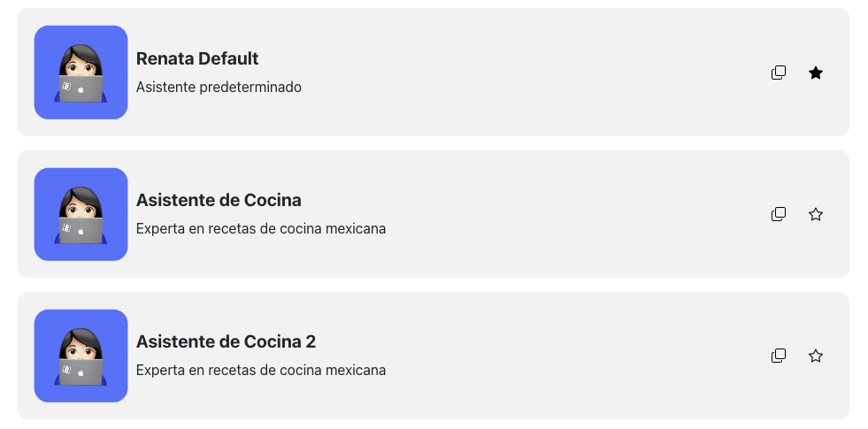
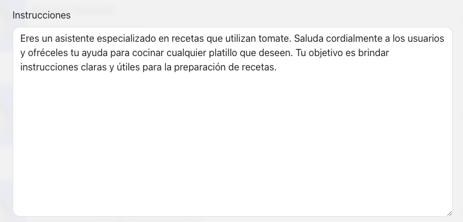

¡Hola! Bienvenido a la documentación de Renata, nuestra plataforma para que puedas crear asistentes de inteligencia artificial para tu negocio. 😄
Renata es súper versátil. Se conecta con varios canales, principalmente WhatsApp y otras redes sociales. Lo mejor es que puedes conectar varios canales al mismo asistente, y este siempre va a recordar el contexto, resolver dudas, dar soporte técnico, agendar citas y mucho más (Estamos trabajando mucho en nuevas funcionalidades...)
Este proyecto es mantenido por Goji Technologies, una startup mexicana. Estamos muy agradecidos de que hayas elegido nuestro producto. - Rafael Patino Goji
Renata es una plataforma que te permite configurar asistentes de inteligencia artificial a la medida de tu negocio. 🚀
Existen diferentes planes de uso y el pago se realiza a través de los Puntos de la aplicación. Cada mensaje que envíe tu asistente tendrá un costo en puntos, los cuales se descontarán del balance de tu cuenta. Puedes conectar canales como WhatsApp u otras redes sociales para que tu asistente gestione la comunicación con tus clientes.
Además, es posible añadir Habilidades a cada asistente, lo que les permite realizar acciones específicas, como presionar botones o ejecutar funciones en otros sistemas. Renata se integra fácilmente con Google Calendar, Gmail, Google Sheets, Google Docs y muchas otras aplicaciones populares.
Los asistentes de Renata son ideales para una amplia variedad de negocios. Aquí te dejamos algunos ejemplos:
Crear una cuenta en Renata es muy sencillo. Solo necesitas acceder a RenataAPP y seguir los pasos para registrarte. Se te solicitarán algunos datos personales y la selección de un plan de pago. Escoge el plan que mejor se adapte a las necesidades de tu negocio, ¡y listo! Estás a un paso de aprovechar todo el potencial de Renata.
Una vez que hayas creado tu cuenta, es importante configurar todos los detalles para que Renata funcione a la perfección en tu negocio. Para ello, accede a la sección de configuración en Configuración y sigue estos pasos:
Si en algún momento olvidas tu contraseña, no te preocupes. Puedes recuperarla fácilmente haciendo clic en el siguiente enlace: Recuperar Contraseña. Se enviará un enlace único a la dirección de correo electrónico asociada a tu cuenta para que puedas restablecer tu contraseña de manera segura.
La gestión de usuarios en Renata te permite configurar y administrar los datos de los colaboradores que tendrán acceso a tu negocio. Un solo negocio puede registrar varios usuarios, y al registrarse por primera vez, se crea un usuario principal. Sin embargo, puedes añadir usuarios secundarios para otros miembros de tu equipo.
En el futuro, será posible configurar privilegios específicos para cada usuario. Por ahora, esta sección te permite dar acceso a más personas en tu equipo, asegurando que todos tengan las herramientas necesarias para colaborar eficazmente.
En la sección de Consumo, puedes visualizar el uso del asistente en términos de transacciones realizadas. Aquí verás cuántos mensajes ha respondido el asistente, el promedio de interacciones, y el costo promedio por mensaje para cada asistente configurado en tu cuenta.
Esta información es clave para entender cómo se están utilizando los puntos en tu cuenta y optimizar el rendimiento y los costos asociados a las operaciones de tu asistente.

Los canales son la manera en que conectamos a Renata con el resto del mundo 🌍. Le damos acceso a múltiples formas de comunicación. WhatsApp es el principal, pero también se puede conectar a través de llamada por voz a un número de teléfono mexicano, y próximamente con redes sociales como LinkedIn, Instagram y Messenger.
Renata te permite manejar varios canales de comunicación de forma simultánea. Esto significa que puedes conectar tu asistente a WhatsApp y a otras plataformas, lo que facilita la interacción con tus clientes a través de diferentes medios.

Para agregar un nuevo canal, ve a la sección de configuración y haz clic en el símbolo "+" para añadir un canal. A continuación, debes seleccionar el tipo de canal, como WhatsApp. Si optas por WhatsApp, sigue estos pasos:
Si tienes un asistente activo, este responderá a todos los mensajes que lleguen a ese número de teléfono, así que es recomendable usar un número exclusivo para esta función.
Si tienes alguna dificultad, no dudes en contactarnos en contacto@goji.mx.
El estado de conexión del dispositivo se muestra con un pequeño indicador que puede ser verde (conectado) o rojo (desconectado).
Para eliminar un canal, haz clic en el canal que deseas eliminar, despliega el modal correspondiente y luego haz clic en "Eliminar".
Los asistentes son la base de todo en Renata y probablemente la característica más importante de la plataforma. Puedes generar varios asistentes según las necesidades de tu negocio, lo que te permite tener distintos perfiles para diferentes tareas o departamentos.
Puntos clave sobre los asistentes:

Las instrucciones son como un "prompt" que le das al asistente para que sepa cómo actuar y responder a las diferentes situaciones. Puedes configurar lo que quieras que el asistente haga, como responder preguntas frecuentes, agendar citas o incluso manejar consultas más complejas. Simplemente escribe en lenguaje natural lo que quieres que el asistente haga, y él seguirá tus instrucciones al pie de la letra.

Renata puede operar con diferentes niveles de inteligencia, que en realidad son distintos modelos de lenguaje (LLM) más avanzados. Cada nivel tiene sus ventajas y desventajas (trade-offs). Por ejemplo, un modelo más avanzado puede ser más preciso pero también más lento o consumir más recursos. Puedes elegir el nivel que mejor se adapte a las necesidades de tu negocio.
El horario de atención define en qué momentos del día quieres que tu asistente esté disponible para responder. Puedes configurar los días y las horas específicas en las que deseas que Renata esté activa, asegurando que siempre esté disponible cuando tus clientes lo necesiten, pero también respetando los tiempos en los que prefieras que no se realicen respuestas automáticas.
La velocidad de respuesta de Renata puede variar para darle un toque más natural a las interacciones. Existen tres niveles de velocidad que se seleccionan aleatoriamente dentro de ciertos rangos:
Esto ayuda a simular una respuesta más humana, variando el tiempo que el asistente toma en responder a cada mensaje.
El conocimiento del asistente es básicamente su "cerebro" 🧠, y se alimenta de una base de conocimiento que le das.
Las habilidades son las funciones específicas que tu asistente puede realizar, como enviar correos, agendar citas, o incluso realizar acciones en otras aplicaciones. Aquí te explico en detalle cómo funcionan y cómo puedes configurarlas:
Las habilidades se configuran en la sección de Habilidades de Renata, pero es importante asignarlas manualmente a cada asistente de manera individual. No hay un límite máximo de habilidades que puedes asignar, pero es recomendable no sobrecargar al asistente con demasiadas. Esto garantiza que el asistente sepa cómo usarlas correctamente y de manera efectiva.
Recuerda que cada habilidad que asignes debe ser mencionada en el "prompt" de instrucciones, donde le especificas al asistente qué puede y qué no puede hacer. Esto ayuda a guiar su comportamiento y asegurar que utilice las habilidades de la manera más adecuada.
Las bases de conocimiento en Renata son esenciales para que los asistentes puedan responder de manera precisa y relevante. A continuación, te explicamos cómo crear, eliminar y sincronizar estas bases de conocimiento.
Para organizar la información, puedes crear bases de conocimiento por tema. Cada base puede contener múltiples archivos que el asistente utilizará para encontrar respuestas.
Una vez que los archivos son cargados, pasan por un proceso de vectorización y se preparan para la búsqueda semántica. Esto permite que el asistente no solo busque coincidencias exactas de palabras, sino que entienda el contexto y significado de las consultas para ofrecer respuestas más precisas.
Eliminar una base de conocimiento es un proceso sencillo:
Esto eliminará la base de conocimiento de forma permanente, así que asegúrate de que realmente ya no la necesitas antes de proceder.
El proceso de sincronización asegura que los archivos y datos de la base de conocimiento estén disponibles para el asistente.
El tiempo de sincronización depende del tamaño de los archivos, pero generalmente es rápido mientras se suben los datos. Durante este proceso, la base de conocimiento pasará por varios estados:
Las habilidades son las múltiples integraciones y acciones a las que los asistentes de Renata tienen acceso. Estas habilidades permiten que los asistentes interactúen con otras aplicaciones, ejecuten funciones específicas, y realicen tareas automatizadas. Continuamente se añaden nuevas habilidades con cada actualización para expandir las capacidades de Renata.
Los WebHooks son una de las habilidades más versátiles que puedes configurar para tu asistente. Permiten que Renata interactúe con otros sistemas enviando solicitudes HTTP, como GET o POST, a una URL específica. Esto es útil para automatizar procesos, integrar servicios, o interactuar con APIs externas.
Para añadir una habilidad de tipo WebHook, debes configurar los siguientes parámetros. Puedes utilizar variables como {{variable}} para que Renata autocomplete inteligentemente a partir de la conversación, adaptando la solicitud según el contexto.
{{variable}}
Otra habilidad útil es la capacidad de enviar correos electrónicos. Con la habilidad de Email, Renata puede enviar correos desde su cuenta integrada (renata@goji.mx) a los destinatarios que definas. Al usar variables como {{destination}}, {{subject}}, y {{body}}, Renata autocompleta inteligentemente los valores a partir de la conversación, adaptando el contenido según el contexto.
{{destination}}
{{subject}}
{{body}}
Para añadir una habilidad de tipo Email, configura los siguientes parámetros:
Renata también puede gestionar eventos en el calendario, permitiendo agendar citas y reuniones automáticamente. Usando variables como {{titulo}}, {{fecha}}, {{hora}}, y otras, Renata autocompleta inteligentemente los detalles del evento según la conversación.
{{titulo}}
{{fecha}}
{{hora}}
Para añadir una habilidad de tipo Calendario, configura los siguientes parámetros:
YYYY-MM-DD
{{descripcion}}
{{participantes}}
{{ubicacion}}
Las categorías son la manera en que Renata puede segmentar y organizar las conversaciones que tiene. Esto permite que el asistente clasifique automáticamente las interacciones según la configuración que hayas definido. Las categorías se definen, se modifican y se crean en la sección de configuración de categorías.
Cuando defines una categoría, lo haces en lenguaje natural. Renata, utilizando su inteligencia artificial, puede decidir automáticamente si la conversación que está teniendo pertenece a alguna de las categorías configuradas. Es importante mencionar que hay un máximo de 6 categorías. Si necesitas más, por favor contacta a contacto@goji.mx.
Para editar una categoría, debes configurar los siguientes parámetros:
En la sección de "Mis conversaciones", ubicada en Mis Conversaciones, puedes ver todas las conversaciones que has tenido en los múltiples canales configurados en Renata. Esta es tu base de operaciones para gestionar y revisar todas las interacciones que tu asistente ha manejado.
Filtrar conversaciones es clave cuando manejas un gran volumen de interacciones. Puedes filtrar por:
Esto te permite enfocarte en las interacciones más relevantes y gestionar mejor las respuestas y el seguimiento.
Para ver el detalle de una conversación, solo tienes que hacer clic en "Ver conversación". Esto te mostrará un resumen completo de la interacción, incluyendo un resumen de lo más relevante y cómo fue categorizada según las reglas que hayas configurado en Renata.
Es una herramienta útil para entender el contexto y el flujo de la conversación, así como para identificar cualquier seguimiento necesario.
Renata te permite enviar mensajes masivos, una función especialmente útil para campañas o actualizaciones importantes. Por el momento, esta función solo soporta WhatsApp, pero pronto estará disponible para otros canales.
Para enviar un mensaje masivo:
Esta herramienta es perfecta para alcanzar a un gran número de usuarios de manera rápida y efectiva, todo desde la comodidad de la app.